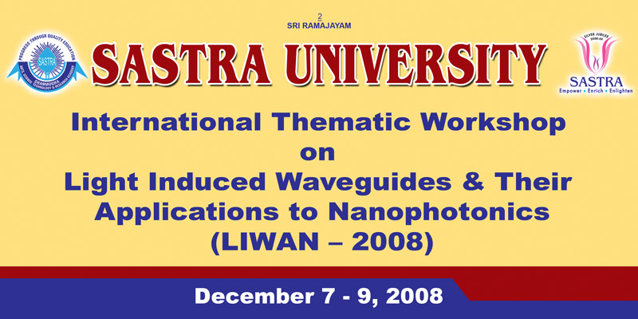

Professor Noel Frederick Smyth
FAustMS
Present Postion: Professor of Nonlinear Waves, School of Mathematics, University of Edinburgh.

Education
B.Sc (Hons, first class), 1980, University of Queensland
Ph.D., 1984, California Institute of Technology
Publications
Conferences
WorkShop: Light Induced Waveguides and their Applications to Nanophotonics, SASTRA University, Tamil Nadu, 7th to 9th December, 2008.
WorkShop: Nonlinear Guided Waves IV, Cadi Ayyad University, Marrakech, Morocco, 24th to 26th March, 2010.
WorkShop: Nonlinear Guided Waves V, Feza Gürsey Institute for Fundamental Sciences, Istanbul, Turkey, 25th to 27th March, 2011.
WorkShop: Nonlinear Guided Waves VI, University of Santiago, Santiago de Compostela, Spain, 7th to the 9th May, 2012. Photos
Tim Minzoni's Conference, 11th to the 13th April, 2012 Photos
WorkShop: Nonlinear Guided Waves VII, Duke of Gordon Hotel, Kingussie, Highlands, Scotland, U.K., 7th to the 9th May, 2014.
WorkShop: Nonlinear Guided Waves VIII, Hotel Victoria, Oaxaca, Mexico, 29th to the 31st March, 2016.
Research Interests
Nonlinear waves in general
Nonlinear optics
Korteweg-de Vries and related equations
Nonlinear Schrödinger (NLS) and related equations
Modulation theory
Nonlinear waves in liquid crystals
Sine-Gordon equation and its applications
Nonlinear waves in meteorology and oceanography
Movies
Possible PHD Projects
Steering of solitons in liquid crystals (nematicons) with a view to developing photonic devices.
Behaviour of solitons in liquid crystals (nematicons) at interfaces.
Interaction of one dimensional solitons in liquid crystals (nematicons).
Developing higher order corrections to variational methods for the NLS equation incorporating radiation.
Examining the stability of optical vortices in nonlocal media, with particular emphasis on liquid crystals.